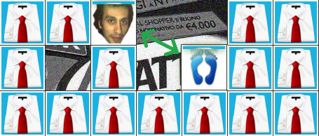

Verrà utilizzato per l'inserimento in classifica, quindi sii originale!
Collega il personaggio della "saga Diprè" al suo feticcio e accumula punti con le combo rapide!
| Pos. | Nome | Punti | Errori | Tempo |
SEO: Catafratt game, Andrea Diprè, html5, css3, edoardo casella, civile, peppe fetish, richard benson, giuseppe simone, peppe simone, monella, catafratto, sibaritico